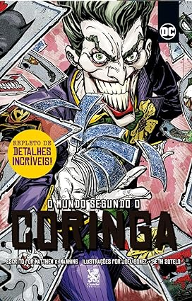

<html lang="en">

</html>

<head>
    <meta charset="UTF-8">
    <meta name="viewport" content="width=device-width, initial-scale=1.0">
    <link rel="stylesheet" href="pagina.css">
    <link rel="website icon" type="png" href="imagens/logo.png">
    <link rel="stylesheet" href="css-geral.css">
    <title>Pagina principal</title>
</head>

<body>
    <header>
        <div class="container">
            <h1>Bem-vindo à Manga Haven</h1> <a href="/tela-inicial/pagina-principal.html"></a>
            <nav>
                <ul>
                    <li><a href="../tela-inicial/pagina-principal.html">Home</a></li>
                    <li><a href="../tela-inicial/sobre-site.html">Sobre</a></li>
                    <li><a href="../tela-de-login/tela-de-login.html">Sair</a></li>
                </ul>
            </nav>
        </div>
    </header>
    <br><br><br><br><br><br><br><br><br><br><br><br><br><br>
    <main>
        <section class="produtos" id="dc">
            <div class="container">
                <h1>O Mundo Segundo o Coringa</h1>
                <div class="grid-produtos">
                    <div class="item-produto"> 
                    </div>
                </div>
            </div>
            <div class="item-produto">
                <h5>O Mundo Segundo o Coringa</h5><br>
                <h5>Avalições:★★★★★(221)</h5><br>
                <h5>Detalhes:</h5>
                <p>Autor:Joker (escrito por Brian Azzarello)</p>
                <p>Ano de Lançamento: 2008</p>
                <p>Descrição: O Mundo Segundo o Coringa oferece uma visão intensa e perturbadora do icônico vilão do
                    Batman, o Coringa. Escrita por Brian Azzarello, a história é narrada sob a perspectiva do próprio
                    Coringa, mergulhando em sua mente caótica e explorando sua visão distorcida da realidade. A obra é
                    conhecida por seu tom sombrio e narrativa provocativa.</p> <br>
                <a href="https://www.amazon.com.br/Mundo-Segundo-Coringa-Matthew-Manning/dp/6585168720"
                    target="_blank">Mais
                    Detalhes</a>
                <br>
                <h5>Sobre:</h5>
                <p>
                    É uma graphic novel que explora o universo através da perspectiva do Coringa, um dos vilões mais
                    icônicos do Batman. Nesta obra, o Coringa narra sua própria história, revelando suas visões
                    distorcidas e suas interpretações do caos e da ordem. A narrativa mergulha na mente do personagem,
                    oferecendo uma visão única e perturbadora de sua psicologia e suas motivações.
                </p><br>
                <h4 id="valor">R$46,00</h4><br>
                <a href="../carinho-de-compras/coringa.html">Adicionar ao carinho</a><br>
            </div>
        </section>
        <div>
        </div>
        </section>
    </main>

    <footer>
        <div class="container">
            <p>&copy; 2024 Manga Haven</p>
        </div>
    </footer>
</body>

</html>